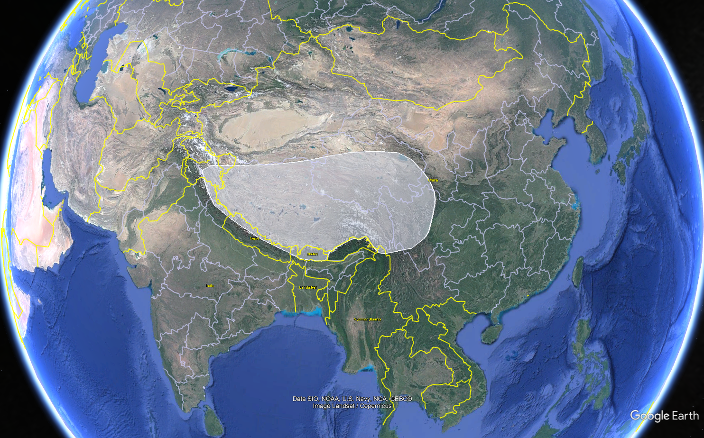
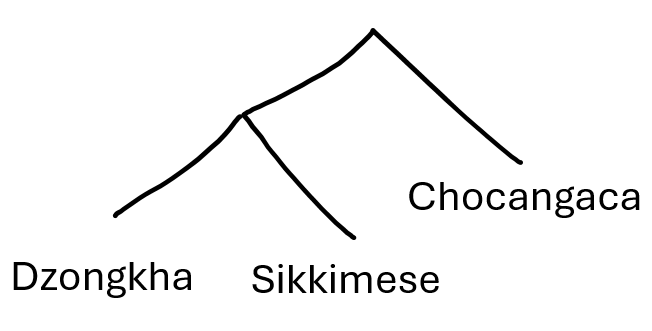
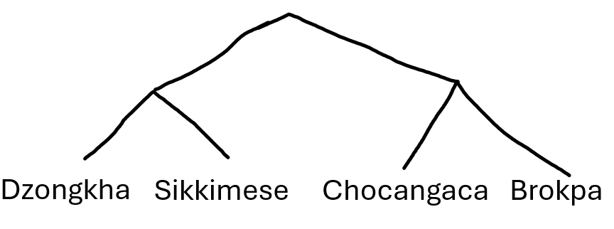

The Mystery of Southern Tibetic
13 Feb 2025
There is something a little arcane about the idea of “research”, especially in the humanities or social sciences. What does it actually entail? What is the day to day of “research”. Due to various reasons*, I have a fair bit of time at the moment for research, and for some extra side projects, so I thought it could be interesting to write a bit of a blog about my own research and the process of doing it (because, of course, the one thing the world needs right now is more blogging). In particular, it might be interesting to people who are interested in linguistics, but also it’ll help me get my own thoughts more in order and keep track of everything I’ve actually done. I see research as sort of detective work, especially with my current interest in historical linguistics and what it can tell us about wider history and especially prehistory. I find little mysteries in my data, and I need to get to the bottom of them. Or, at the very least, I try to, and either get stuck or distracted and never really come to a satisfying conclusion. It’s very frustrating.
With that in mind, this is the Mystery of Southern Tibetic.
Okay so this needs some background. When non-linguists talk about Tibetan as a language, they’re usually referring to the language spoken in and around Lhasa, Tibet’s capital. Given the sheer size of cultural Tibet, the actual picture on the ground is more complicated than this. Basically, when the Tibetan Empire appeared and spread across the Himalayas from the Seventh Century, it took its language with it. 1,300 years later, the various forms of this language spoken across the range have diverged, and today we have a huge number of different languages all descended from the same Old Tibetan language. This is similar to the Romance languages in Europe, where the Roman Empire spread Latin across the continent, which has since evolved into languages such as Portuguese, Spanish, French, and Italian. In both cases too, the original language was written, so we have really good records of the language from which the modern-day family evolved (this is, of course, an oversimplification, because language diversification is a slow process, and not all written Tibetan records come from the same era). I refer to the group of languages descended from Old Tibetan as “Tibetic” languages. Other terms include Bodic or Bodish (from the Tibetic word for Tibet, bod), but these get confusing so I’m going to stick with Tibetic.
So, so far, we have this group of languages called the Tibetic languages, all descended from Old Tibetan. They’re spoken across a huge area, from the northern tip of Pakistan, along the length of the Himalayas, and as far into China as the provinces of Sichuan and Qinghai.
Have a map:
Now in theory we can break the Tibetic family down into smaller subgroups. The diversification of the family didn’t happen all at once, but groups split off, and split off again, and so on. Given this, we can represent language evolution and diversification as a sort of family tree. A number of these branches are clear. The languages of Amdo (see the map) are clearly more closely related to each other than to the other Tibetic languages. The same goes for Kham, Central Tibet (aka Ü-Tsang), and the languages spoken in the far West of the region. Without going into more detail than I’ve already forced on you, there’s a lot we don’t know about the structure of the family. A large part of this is that there are a huge number of languages here, many spoken by very few people, and we simply don’t know all that much about most of them.
One last piece of background information: I said that we can view language families like a family tree, but there is one key issue with this metaphor. When we talk about biology or genetics, the transfer of information is (almost) entirely vertical. Genes are passed from parent to child, and not between neighbours. In language, however, both are possible. At a personal level, generally speaking you will learn your native language from your parents or the people around you at a young age. This is more or less equivalent to vertical gene transfer, in which one generation passes the information on to the next. As you get older, though, you continue to pick up language from the people around you. Think about slang, memes, and so on. The way you speak throughout your life will continue to be influenced by the way the people around you speak. This also happens at a much larger scale, between communities speaking different languages rather than people speaking the same language. The most obvious of these influences is borrowing. English has a huge number of words borrowed from (Norman) French, because of close contact between the languages. Today, many languages have borrowed words from English because of contact between the languages – people speaking both languages and mixing them, which then gets picked up by the wider community. Linguists reconstruct language family trees by working out what various languages have in common with each other, and infer from these similarities that they must have descended from a common ancestor. Horizontal transfer such as borrowing confounds this though, as two languages can look very similar but share no ancestor at all, only appearing as such because of a history of close contact.
Okay that’s enough (too much?) background. This is the Mystery of Southern Tibetic. There are a group of languages spoken (shockingly) in the southern part of the Tibetic-speaking area. Specifically, in and around Bhutan. There has been some research on some of these languages, but as will become clear, in most cases this is very limited. Given this limited research, as far as I can tell, the concept of Tibetic subgroup called Southern Tibetic is mostly an assumption or a geographic grouping. That is, nobody has actually proven linguistically by looking for shared traits that these languages do actually form a single branch (that they are all descended from the same language, which was in turn descended from Old Tibetan). This is where we come in.
We’re going to talk about Southern Tibetic in terms of six languages, following the grouping suggested by Tournadre and Suzuki (2023) in their incredibly comprehensive book The Tibetic Languages: an introduction to the family of languages derived from Old Tibetan (see, I’m not just making this up):
- Dzongkha, the national and most spoken language of Bhutan
- Sikkimese (aka Denjongke, Lhoke), the language of the historical royal family and high society of the now Indian state of Sikkim
- Groma, spoken in the Chumbi valley between Bhutan and Sikkim, largely undescribed
- Chocangaca, spoken in Central and Eastern Bhutan by as many as 20,000 speakers
- Brokpa, spoken along the border between Bhutan and the Indian state of Arunachal Pradesh
- Brokkat, spoken in the village of Dur in Central Bhutan
There are other languages that could be included here. Lakha is spoken just west of Brokkat, but I have no data on it. There are also a couple of dialects of Dzongkha which could be considered different languages spoken in the high mountains of the country’s North-West, Layakha and Lunanakha.
So, a feature of Old Tibetan is that it had a wide range of “complex onsets”. Basically, words were able to start with long strings of consonants that seem crazy to us as English speakers (e.g., bsgrubs ‘accomplish’). As time went by, these were simplified to various degrees in the various descendent languages. One particularly common (and less outlandish) complex onset was a consonant followed by r. You can see it above in gr, but also pr, tr, dr, etc.
I first came across a difference in how these clusters have evolved when I was looking at data I was collecting from Chocangaca (all the c’s are pronounced like ch by the way). I had learned that in Lhasa Tibetan, these clusters had mostly been reduced to a “retroflex” sound, sort of a T and R at once (say T but curl your tongue backwards first). In Chocangaca, however, this hadn’t happened with the Old Tibetan pr. For instance, the Old Tibetan word for ‘six’ was drug, which became a retroflex in Chocangaca: ɖu (the descending hook here means retroflex), Old Tibetan ’khrud ‘wash’ became ʈʰu (don’t worry about the little h here), but Old Tibetan dpral-ba ‘forehead’ became Chocangaca prewa (there’s a bunch of other stuff here but the main idea is that the pr stayed as pr, unlike the other two). Now, everyone seems to be under the impression that Chocangaca and Dzongkha are closely related. George van Driem (perhaps the father of linguistics in Bhutan and surrounds) has suggested (in 2001, so we can’t really assume this is still his position) that the speakers of Chocangaca share a common ancestor with Dzongkha specifically. We would assume, then, that we’d see similar “sound changes” from Old Tibetan in Dzongkha. If we don’t (if Dzongkha reduces these sounds differently, or not at all), this means one main thing – the sound change happened after Dzongkha and Chocangaca split apart. Now this doesn’t mean a whole lot by itself. It’s immediately obvious from looking at the languages that they’ve been separate for a while. These are two different languages without any real mutual intelligibility, but with some extra context, we might be able to learn something from this. Luckily, there’s loads of data available on Dzongkha, from comprehensive dictionaries, to (in the last year or so) Google Translate! Given this, you can play along at home! Put ‘wash’ into Google Translate for Dzongkha and see if the word is like khru or thru.
As you might have guessed by the direction this is going, Dzongkha doesn’t share this sound change. Instead, it goes quite a different direction and turns all the r’s into y’s. Old Tibetan br becomes by etc. Instead of ʈʰu for ‘wash’ as in Chocangaca, we see khyu. Basically, Dzongkha and Chocangaca split before the r-clusters were simplified at all and went in two very different directions. Interestingly, the direction that Chocangaca took is much more similar to what we see in other parts of the Tibetic family, in particular in Central Tibetic, spoken to the north.
What about the other languages that have been grouped together as Southern Tibetic. This is where it gets really interesting (to me). Sikkimese also has good data available. In particular, there’s a full grammar (i.e. description) or the language by Juha Yliniemi published by Himalayan Linguistics (an open access journal, so it’s free online), and we can just search in there for any words we need. Let’s take the word for ‘wash’. In Sikkimese, we get khyu (p. 88, Yliniemi uses IPA but I’ve transcribed it here to make the point clearer, take my word that it’s the same). This is the same as Dzongkha, and this probably isn’t a coincidence. Here, we begin to face the challenge of borrowing. It is technically possible that this is a borrowing from Dzongkha to Sikkimese, but that requires substantial contact between speakers of both languages. The alternative is that the change happened in the ancestor of both languages and was inherited into both. To me, this seems more likely. In particular, we see this pattern with other words too. Sound changes like this r->y change happen pretty consistently across a whole language, whereas borrowing applies to single words only.
So, if Dzongkha and Sikkimese have a shared ancestor where these r-clusters became y-clusters, but Chocangaca separated before this change happened in Dzongkha and went its own direction, this means that we have a tree like this:
Chocangaca and Dzongkha aren’t sisters at all! At the very least, Dzongkha and Sikkimese are more closely related to each other than Dzongkha and Chocangaca. We should check all the other languages.
The next language in terms of description is Brokpa, which has a full grammar (this time a PhD thesis) by Pema Wangdi, and a bunch of data including a wordlist from a project at the University of Bern, all also available for free online (we love open access publishing). There’s a bit of variation here in the form we find, and Pema Wangdi gives a couple of different transcriptions throughout his work, but the one thing they all share is the use of the retroflex, as in Chocangaca. With this, we can add Brokpa to our tree:
The last two languages are a bit trickier to find data on. In their book (mentioned above), Tournadre and Suzuki actually present a bit of data from Groma. It’s not totally clear where it’s from, but I suspect it’s their own data that isn’t available more widely. Given this, we aren’t able to find a word for ‘wash’ and make a nice set. In our case, all we have to go on here is a comment by the authors that Groma is the same as Sikkimese in terms of some r-clusters (p. 562). At this stage, this is enough to group Groma with Dzongkha and Sikkimese. Geographically this makes sense, given language is spoken directly between Dzongkha and Sikkimese.
Please read the following aloud:
But Carl, if we know that in Groma, r-clusters become y-clusters, why is the name of the language ‘Groma’ and not ‘Gyoma’?
This is a great question, and I’m really impressed that you thought of it. Language names are problematic at the best of times, in that there’s generally a bunch of different names for a given language and we just need to pick one. Here, Groma is from the traditional old spelling, which in many cases is still used (ignoring modern pronunciations) for religious reasons. The language is also called Dromo, or Chumbi. The gr -> dr (representing a retroflex) I assume is from the way it would be pronounced in Lhasa, and gr->ch is from a further sound change (seen in Dzongkha too) where gy becomes ch or j (if you say these aloud it’ll make a bit more sense how it would happen). Again, given we have basically no data from the language itself, it’s hard to say at this point.
The last language we need to look at is Brokkat, spoken in a single village in Bhutan’s Bumthang district. I have been able to find one source on Brokkat, and it’s in Japanese (Fuminobu 2014). Google Translate luckily solves many of the problems here (I cannot imagine being a researcher 20 years ago, good lord). Honestly the hardest part was actually finding it. It’s free online, but behind a series of very Japanese webpages that I got very lost in. In any case, I found it eventually, and it’s even got a word list in English at the end! And it’s got ‘wash’! And it’s got a retroflex!
So where does that leave us? Well, we have one sound change. This isn’t a huge amount, and it’s not enough to prove anything indisputably, but it gives us a good starting point. It also gives me a conference presentation, if not a journal article I reckon. What this tells us, though, is that of these six “Southern Tibetic” languages, we have two groups. A western group where r-clusters have become y-clusters, and an eastern group where r-clusters have been preserved in some cases (following p) but reduced to retroflexes in others.
What’s next? The similarity between the eastern cluster (reduction to retroflex) and Central Tibetic languages, which do the same thing more to all r-clusters, makes me wonder if perhaps “Southern Tibetic” isn’t really a thing at all. Perhaps our eastern cluster actually split off at a different time and place from the trunk of the Tibetic family tree, and we just assumed all these languages were related because they are spoken near each other, and there are some similarities that could just as easily be a result of contact between Dzongkha (as Bhutan’s national language) and the eastern languages. Two things would help us clarify this further: a wider survey of r-clusters in Tibetic languages to see where else they are reduced to retroflex (my impression is that this happens very widely, and is less meaningful than maybe it seems here), and a closer study of these six languages to see if any more sound changes can divide the languages so nicely. George van Driem (2001) suggests that there are shared changes between Dzongkha and Chocangaca, which suggests that there is a single group with two branches, but he annoyingly doesn’t actually say what any of them are, so I’ll have to find them myself. Experience tells me that the deeper I look, the messier things will become. I’m enjoying this neatness while it lasts.
van Driem, George. 2001. Languages of the Himalayas. Vol. 2. Leiden: Brill.
Nishida, Fuminobu 西田, 文信. 2014. Burokatto go no on-intaikei: Butan'ōkoku bumu tan ken duru mura gengo chōsa shoho hōkokuブロカット語の音韻体系：ブータン王国ブムタン県ドゥル村言語調査初歩報告 [A Phonology of Brokkat, a language spoken in the village of Dhur in Bumthang valley in central Bhutan]. アルテス リベラレス [Artes Liberales] 94. 1-17.
Tournadre, Nicolas & Suzuki, Hiroyuki. 2023. The Tibetic Languages: an introduction to the family of languages derived from Old Tibetan. Paris: LACITO-Publications.
Wangdi, Pema. 2021. A Grammar of Brokpa: a Trans-Himalayan language of Bhutan. Cairns: James Cook University.
Yliniemi, Juha. 2021. A descriptive grammar of Denjongke. Himalayan Linguistics. California Digital Library (CDL) 20(1).